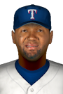

|
|
|  |
Santana Bangs Out 5 Base Hits Friday, May 1st, 2020 Danny Santana was at the head of a Texas hit parade today at Fenway Park. The center fielder went to the plate 7 times and came away with 5 hits, sparking the Rangers to a 20-4 victory over the Boston Red Sox. "I told the guys in the dugout, just be thinking about hitting the ball hard somewhere," the sweet-swinging Santana told reporters after the game. "Seems like it worked out well for us today." Red Sox skipper Ron Roenicke said later that the club gave up "too much plate." "Not the way we planned it," he said. "Every hitter in the league will rip you when you do that." Danny Santana flied out in the 1st, hit an RBI single in the 2nd, struck out in the 4th, doubled in the 5th, hit an RBI double in the 6th, hit a two-run single in the 7th and hit a two-run home run off Nathan Eovaldi in the 9th. Presently Santana is batting .347 with 17 hits and 2 home runs. He has knocked in 16 runs and scored 9 times. View Boxscore View Game Log |


|